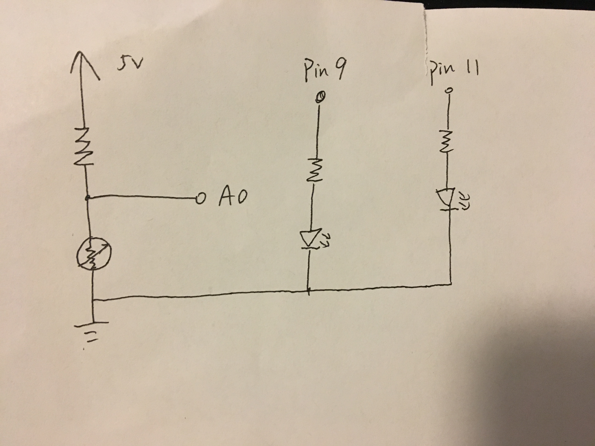
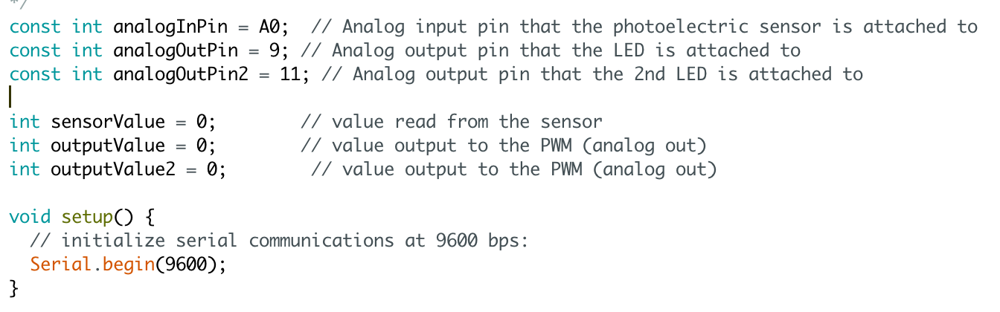
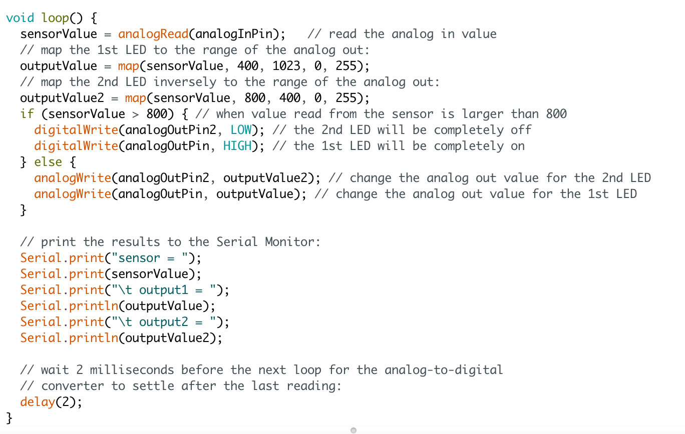

Schematic - there are two LEDs that are controled by the photoresistor.
A0 measures the voltage of the photoresistor.

Circuit - the two LEDs have inverse effects.


Code

Operation -- when value read from the sensor is larger than 800,
one LED will be completely on, the other will be off.
Otherwise, the two LEDs will fade inversely.